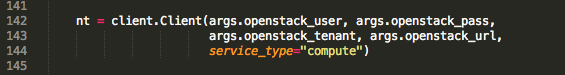
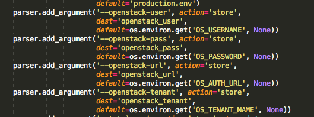

/Users/LY/novaclient/v1_1/__init__.py:30: UserWarning: Module novaclient.v1_1 is deprecated (taken as a basis for novaclient.v2). The preferable way to get client class or object you can find in novaclient.client module. warnings.warn("Module novaclient.v1_1 is deprecated (taken as a basis for " region=NCSA,elastic_ip=true,public_ip=$public_ipv4,mounts=false etcd token is https://discovery.etcd.io/0d4452ecd59b634ab05a3dd1796a5780 Creating 1 Traceback (most recent call last): File "startup_ndslabs.py", line 182, in <module> nics=[{"net-id": args.net_id}] File "/Users/LY/novaclient/v2/servers.py", line 926, in create **boot_kwargs) File "/Users/LY/novaclient/v2/servers.py", line 540, in _boot return_raw=return_raw, **kwargs) File "/Users/LY/novaclient/base.py", line 161, in _create _resp, body = self.api.client.post(url, body=body) File "/Users/LY/novaclient/client.py", line 454, in post return self._cs_request(url, 'POST', **kwargs) File "/Users/LY/novaclient/client.py", line 407, in _cs_request self.authenticate() File "/Users/LY/novaclient/client.py", line 534, in authenticate raise exceptions.AuthorizationFailure(msg) novaclient.exceptions.AuthorizationFailure: Authentication requires 'auth_url', which should be specified in 'HTTPClient'
And I figure out that it is probably because no valid values (I print them out and get 'None' ) are passed in when the script initialize the client object here:

I am confused about these lines of code, how did it get those values?

Would it be possible that the production.env file does not set up correct environment value so all these values are wrong in startup_ndslabs.py? Thanks.
On Jun 18, 2015 17:59, "Lengyue Chen" <lchen95@xxxxxxxxxxxx> wrote:
>
> Hi Kacper
>
> I am confused about this line:
>
> [kacperk@vlad-mgmt ~]$ python -c 'import novaclient; print novaclient.__file__'
> /usr/lib/python2.7/site-packages/novaclient/__init__.pyc
>
> Are you trying to import a file from vlad to the local directory:
>
> /usr/lib/python2.7/site-packages/novaclient/__init__.pycÂ
>
> ?Don't worry about it. I was just showing where the file is located or rather which file import statement grabs. Use 'import novaclient' in your scripts. NDS labs script will (should) work out of the box there.
> If you are, then how do I ssh in vlad to execute this command and is there a key required? I tried but i can not find the ip address ofÂ
>
> https://vlad-mgmt.ncsa.illinois.edu/dashboard/project/You can log in there using your NCSA's credentials. I'm not sure whether you need to be in a specific group to do that. In any case Mike should be able to help you if it requires filing a ticket for the help desk.
Your URL shows the name of the server:
vlad-mgmt.ncsa.illinois.eduI'm almost certain that additional info can be found on NCSA's confluence if you search for phrases like: vlad, openstack.
Unfortunately I don't have access to my laptop and cannot provide you a specific link.
Cheers,
Kacper> Thanks
>
>
>
> On Thu, Jun 18, 2015 at 3:31 PM, Kacper Kowalik <xarthisius.kk@xxxxxxxxx> wrote:
>>
>> On 06/18/2015 03:12 PM, Lengyue Chen wrote:
>>>
>>> Thank you Kacper, I got those files ready. But when I ran
>>> startup_ndslabs.py, it gave me this error:
>>>
>>> Â File "startup_ndslabs.py", line 6, in <module>
>>>
>>> Â Â Âfrom novaclient.v1_1 import client
>>> Â ÂFile "/Users/LY/novaclient/__init__.py", line 18, in <module>
>>> Â Â Â__version__ = pbr.version.VersionInfo('python-novaclient').version_string()
>>> Â ÂFile "/Users/LY/pbr/version.py", line 457, in version_string
>>> Â Â Âreturn self.semantic_version().brief_string()
>>> Â ÂFile "/Users/LY/pbr/version.py", line 452, in semantic_version
>>> Â Â Âself._semantic = self._get_version_from_pkg_resources()
>>> Â ÂFile "/Users/LY/pbr/version.py", line 439, in _get_version_from_pkg_resources
>>> Â Â Âresult_string = packaging.get_version(self.package)
>>> Â ÂFile "/Users/LY/pbr/packaging.py", line 576, in get_version
>>> Â Â Âraise Exception("Versioning for this project requires either an sdist"
>>> Exception: Versioning for this project requires either an sdist
>>> tarball, or access to an upstream git repository. Are you sure that
>>> git is installed?
>>>
>>>
>>> It seems like something wrong with the novaclient module but I tried
>>> uninstalled and installed python-novaclient module using pip several times
>>> and it does not work..
>>
>>
>> Hi,
>> don't install novaclient yourself. There's one already properly configured at vlad.
>>
>> [kacperk@vlad-mgmt ~]$ python -c 'import novaclient; print novaclient.__file__'
>> /usr/lib/python2.7/site-packages/novaclient/__init__.pyc
>>
>>
>>> Also, when I source NDS-openrc.sh, after typing my password it just
>>> returned with no message. Is it normal?
>>
>>
>> If in doubt look inside ;-) This script export bunch of vars, nothing else. Yeah, no output is a good thing.
>>
>> Cheers,
>> Kacper
>>
>>
>>> On Wed, Jun 17, 2015 at 4:00 PM, Kacper Kowalik <xarthisius.kk@xxxxxxxxx>
>>> wrote:
>>>
>>>> On 06/17/2015 03:56 PM, Kacper Kowalik wrote:
>>>>>
>>>>> On 06/17/2015 03:39 PM, Lengyue Chen wrote:
>>>>>>
>>>>>> Hi all
>>>>>>
>>>>>> I am trying to run startup_ndslabs.py to see if it is still working and
>>>>
>>>> I
>>>>>>
>>>>>> need the ssh-key file core.pub.Thanks
>>>>>
>>>>>
>>>>> You need to generate it (ssh-keygen), if you don't have one already.
>>>>
>>>>
>>>> It's easier if you use the same pair that you have registered in
>>>> OpenStack. Please see detailed instruction here:
>>>>
>>>>
>>>> http://labsportal.nationaldataservice.org/nds-labs-quick-start-guide/#Starting_up_the_NDS_Labs_Cluster
>>>>
>>>>> -Kacper
>>>>>
>>>>>
>>>>>
>>>>
>>>>
>>>>
>>>
>>
>